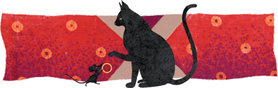

« Nous revoici malheureux comme jadis ! dit Ségué à son père. La tourterelle va me le payer, car je la capturerai à nouveau. Elle a beau connaître le piège et la glu, elle ignore les collets de crin ! » Le chien du vieux chasseur intervint alors : « Ce n'est pas la peine de rattraper la tourterelle ! Je vais tâcher de récupérer ta bague. Laisse-moi faire ! »
Le chien alla trouver un chat. « L'anneau de mon maître est à présent aux mains du chef du village voisin. Si, d'ici ce soir, je ne l'ai pas en ma possession, il n'y aura plus un chat vivant sur terre. » Le chat, à son tour, s'en alla trouver un rat. « Si l'anneau de Ségué passe la nuit chez le chef du village voisin, je mangerai tous les rats jusqu'au dernier ! »
À minuit, trois rats se rendirent chez le chef du village voisin, qui dormait profondément. Le premier rat veilla à ce que personne n'entrât dans la case, le deuxième rat surveilla le sommeil du chef. Pendant ce temps, le troisième lui ôtait la bague du doigt. Quand il l'eut en sa possession, il alla promptement la remettre au chat. Celui-ci, à son tour, s'empressa de la porter au chien. Et le chien la rendit à Ségué Karanmbé.
Avec l'anneau revinrent toutes les richesses qui avaient disparu. De peur de se le voir soustraire de nouveau, Ségué le cousit dans un sachet qu'il suspendit à son cou, puis il dit : « Anneau, porte-moi loin des autres hommes, là où nul ne pourra m'attaquer. » En un clin d'œil, Ségué, sa famille et ses biens se virent transportés sur une montagne inaccessible et d'une prodigieuse hauteur, où ils vécurent longtemps heureux et tranquilles.
